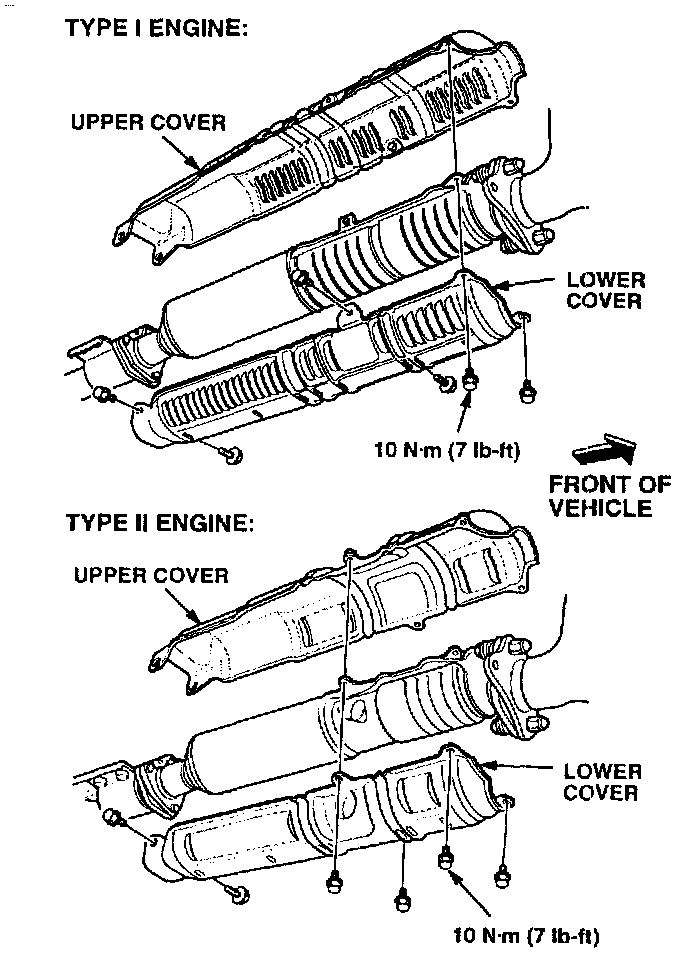
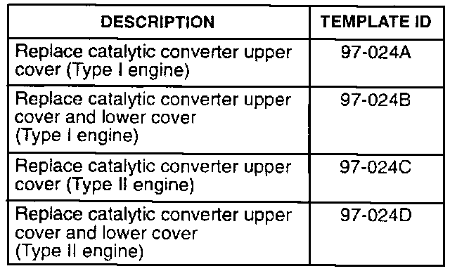

Catalytic Converter - Rattle From The Upper Cover
June 3, 1997BULLETIN NO.
97-024
YEAR
1991-95
MODEL
Legend
VIN APPLICATION
ALL
Rattle From the Catalytic Converter Upper Cover
SYMPTOM
A rattle is heard from the floor of the car, especially during acceleration.
PROBABLE CAUSE
One or more of the mounting points are broken on the upper cover of the catalytic converter.
CORRECTIVE ACTION

Replace the catalytic converter upper cover and its six mounting bolts. (The new upper cover comes with new bolts.) If you damage the lower cover while removing the upper cover, replace it too.
PARTS INFORMATION
Make sure you order the correct cover(s) for the car you are working on.
Type I engine ('91-'92: All, '93-'95: L and LS Sedan)
Upper Cover: P/N 18012-PY3-315
Lower Cover: P/N 18181-PY3-A00
Type II engine ('93-'95: Coupe, '94-'95 GS Sedan)
Upper Cover: P/N 18012-PX9-315
Lower Cover: P/N 18161-PX9-A00
WARRANTY CLAIM INFORMATION
In warranty:
The normal warranty applies.
Operation number: 311140
Flat rate time: 0.3 hour
Failed P/N: 16182-PY3-000
Defect code: 043
Contention code: B07
Skill level: Repair Technician

Out of warranty:
Any repair performed after warranty expiration may be eligible for goodwill consideration by the District Technical Manager or your Zone Office. You must request consideration, and get a decision, before starting work.